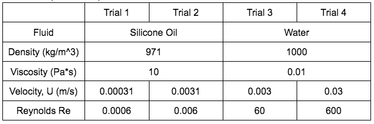
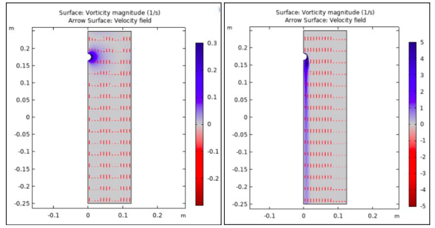

GOAL The goal of this project was to become familiar with the use of COMSOL Multiphysics in simulating the flow of incompressible Newtonian fluids over a simple object. FLUID PROPERTIES  COMSOL SIMULATION COMSOL 56 was used to model single-phase laminar fluid flow through a large pipe by setting geometry for the control volume as a cylinder with height 0.5, radius 0.25m, and positioning the ball 0.175m from the inlet. The ball was assigned the built-in material file for Steel AISI 4340, which ensures that it is non-deformable for this experiment. Variables for dynamic viscosity, density, and linear velocity of the fluid were assigned according to the fluid properties table. The boundary conditions assigned to this uniform flow were 1. U, the wall of the cylindrical volume moves at the same velocity as the assigned velocity of the fluid, and 2. “no-slip”, velocity = 0 where the fluid contacts the surface of the sphere. For each of the four trials, COMSOL was used to calculate drag force by line integration over the surface of the sphere, pressure at the inlet, and pressure on the surface of the sphere, and to find velocity and vorticity profiles for a cut section of the pipe.  Vorticity and Velocity field profiles for Silicon oil (Re=0.006, LEFT), and Water (Re=600, RIGHT)